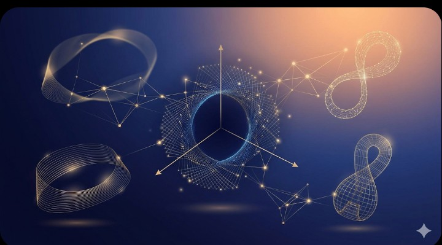
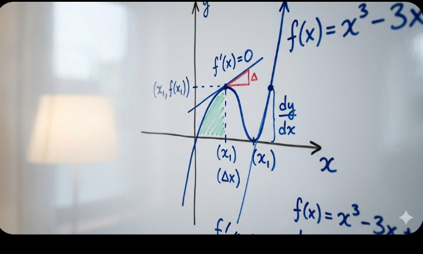
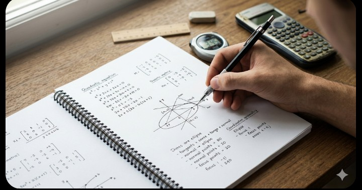

Mathematics in JEE is often perceived as the ultimate gatekeeper. It’s not just about knowing the formulas; it’s about application, speed, and stamina. Many students find Maths lengthy and tough, but with the right approach, it can become your strongest section. As you prepare for JEE 2026, mastering Maths requires a shift from passive learning to active problem-solving.

Image Alt: abstract-maths-concepts.jpg (Visualizing the beauty of complex mathematics)
JEE Maths can be broadly categorized into four main areas. Each demands a specific skill set and preparation strategy.
Calculus forms a major chunk of the JEE paper. It’s highly logical and requires a deep understanding of functions and graphs.
Algebra is diverse and can be very scoring. It requires practice and the ability to spot patterns.

Image Alt: calculus-graphical-intuition.png (Visualizing derivatives and integrals)
This section is formula-intensive but highly scoring. If you know the properties, you can crack these questions quickly.
Trigonometry is used everywhere, while Vectors and 3D Geometry are highly scoring and relatively easier.
Start with basic problems to build confidence. Once you're accurate, focus on speed. Solve problems with a timer. If a question takes more than 3-4 minutes, move on and analyze it later. This is crucial for exam time management.

Image Alt: maths-problem-solving.jpg (Developing an analytical approach)
Maths requires constant practice. Maintain a 'Mistake Book'. Every time you get a problem wrong, write it down, analyze the error (conceptual, calculation, or silly mistake), and note the correct approach. Revise this book regularly.
Give chapter-wise and full-length mock tests frequently. Analyzing mock tests is as important as giving them. Identify your weak chapters and work on them.
Mastering JEE Maths 2026 is about persistent effort and an analytical mind. It’s a subject that rewards problem-solving and logical thinking. Stay consistent, don't get discouraged by tough problems, and learn from every mistake. Remember, every problem you solve correctly brings you one step closer to your dream rank. Keep calculating!